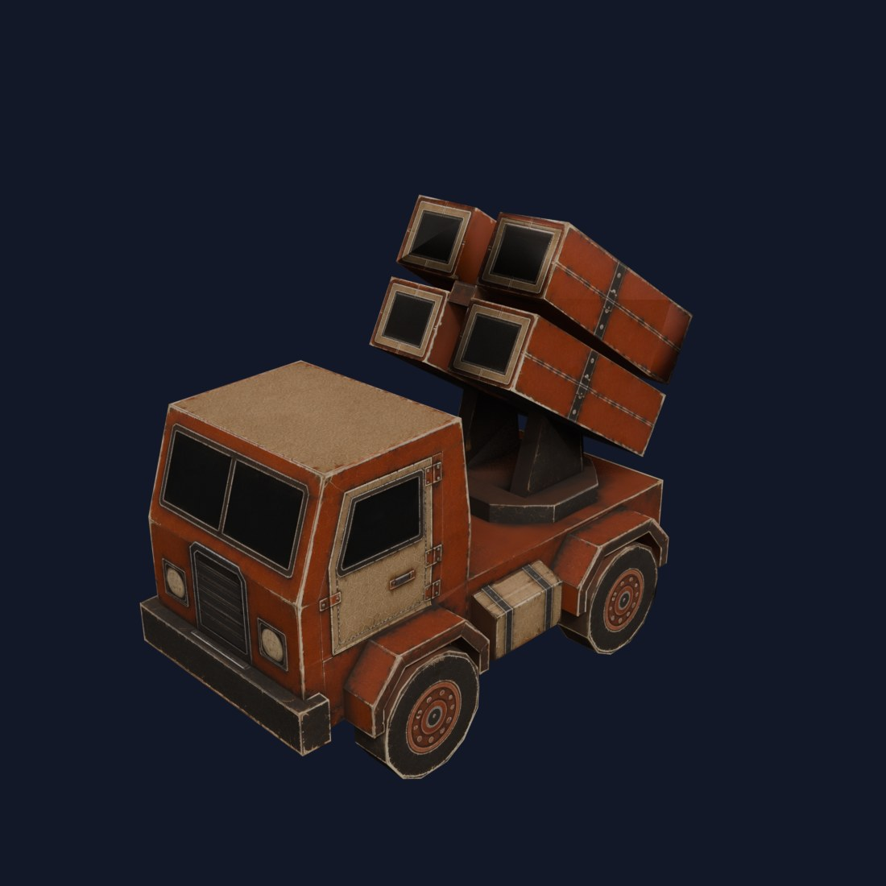

Warpact：AI Image-to-3D 之後人工清理到 791 三角形的低模實戰
Warpact 開發者公開一個實際遊戲單位的流程：概念圖、AI image-to-3D 2,552 tris、人工清理到 791 tris，再完成最終貼圖。

AI 3D ★★★★★
完整分析
技術／流程變更
這個案例把 AI 3D 定位成中間產物而不是最終資產：先由 image-to-3D 取得 2,552 triangles 的基底，再透過人工 cleanup 收斂到實際遊戲使用的 791 triangles。
Production 影響
對低模現世代資產流程很有參考價值，因為它具體顯示 AI 可加速形體起稿，但拓樸、輪廓、面數控制與最終貼圖仍需要 production-oriented 的人工整理。
導入測試與限制
這是單一專案與單一資產案例，不能外推所有題材都能得到相同比例的減面與工時收益；應用角色、硬表面與建築各自做同規格 A/B test。
BRIEF｜來源已驗證；證據深度較有限，完整分析會明確區分已知資訊與待驗證事項。